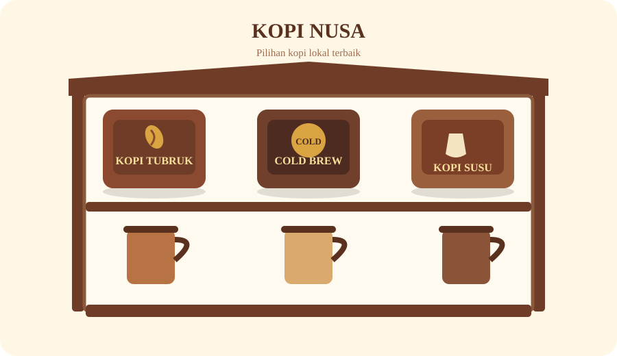

Cerita Usaha
Tentang Kopi Nusa
Cerita Usaha
Kopi Nusa adalah UMKM kopi lokal yang menghadirkan kopi nikmat dengan cita rasa khas. Kami hadir untuk menemani setiap momen dengan secangkir kopi yang nikmat dan terjangkau.

Nilai yang Kami Bawa
- Bahan lokal dari petani sekitar.
- Proses sederhana dan transparan.
- Pelayanan ramah untuk pelanggan harian.
Komitmen Kami
Kami berkomitmen memberikan kopi lokal yang nikmat, terjangkau, dan dibuat dengan pelayanan yang ramah.